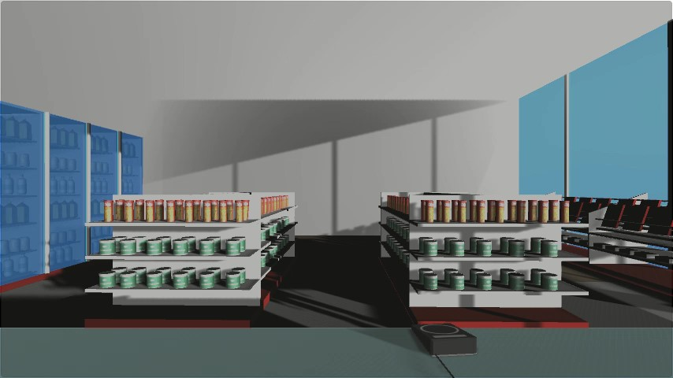

ゲームを開始する前に音量調節と，ゲームの内容に関する動画を視聴して頂きます．
以下の手順で進めてください．
- 「音量確認開始」ボタンをクリックし，パソコンの音量調節を行ってください．
- 音量確認後に画面内に表示される「動画再生」ボタンをクリックし，実際のゲームと同じ内容の動画を店員になったつもりで視聴してください． 全部で4パターンあり，すべて連続で再生されます．
- 繰り返し確認したい場合は，「もう一度再生」ボタンから何度でも動画を再生できます．
- 音量調節とゲーム内容を確認できたら，次に進むボタンから次に進んでください．
動画内で問いかけがありますので，あなたならどうするのか，それぞれのパターンごとに検討してください．次のページ以降で回答して頂きます．
動画の読み込みに時間がかかる場合があります．画像が表示されるまでお待ちください．

-
HTS Voice "Mei(Normal)" Copyright (c) 2009-2013 Nagoya Institute of Technology
-
Open Font License